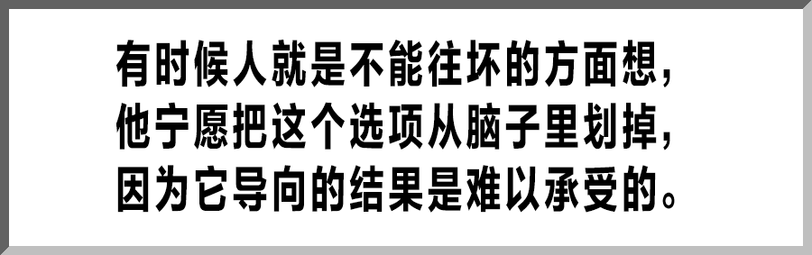

肺炎日记|2月1日：全国病例破万 社会力量参与抗疫呼声不止
原文链接 备份链接 【财新网】（记者 丁捷 综合）2020年2月第1天， 新型冠状病毒确诊患者数量已突破万人。仅次于武汉的重疫区——湖北黄冈下达“史上最严出行令”，2月1日起，严格控制市区居民出行。每户家庭每两天可指派1人上街采购生活物 …

从今天起，我们将围绕全国疫情进行为期两周的报道。
自 1 月 20 日新冠肺炎全面进入公共视野以来，编辑部除了密切留意疫情和它带来的人间悲喜剧外，也试图以我们擅长的角度，小切口地观察这场几乎洗刷了 2019 年国家基调的灾情。最终，我们选择了 6 篇「个人志」和 5 篇「文本重读」来构成这一轮连续报道。关于前者，无论是返乡后遭遇不同程度疫情的年轻人 —— 他们虽和新冠肺炎保持着安全距离，却也无可避免地卷入其间，牵一发而动全身地体验着它的恐怖；抑或自发募集物资的摇滚乐队主唱 —— 出于某种责任感，出于某种理性和激情，也出于某种不信任；以及被及时隔离、获得救治的普通人，都在竭力用自己的方式记录他们剧烈起伏的心理轨迹，和他们眼中构成今日中国的毛细血管。这样一群执笔人，有的是专业记者，有的是律师，有的是初入职场不久的、从未想过要动笔写下自己故事的年轻女孩儿，他们从疫情中看到了属于这一代人的苦难（甚至只是苦难之一），但同时，他们也描摹了一张张在分崩离析中保持了人的尊严、生命的秩序、内心的归属的面孔。我们感谢他们的加入。
而关于后者，我们的写作者将借助经典文本，去思辨这场肺炎疫情带来的隐喻和不确定性，去讨论集体的精神状况，去赞美被博尔赫斯称之为最重要的书写特质 —— 英勇。诗人帕斯捷尔纳克曾经在《二月》里形容，那是一个「墨水足够用来痛哭」的时代，但和痛哭相比，我们更倾向于给 2020年的春天一个理由，让它不至于被黑色的火焰燃烧殆尽。它应当有春天的样子。
和战斗在一线的媒体同仁相比，我们所做的这一切实在是微不足道。但正如我们在跨年夜的微博上所言，我们希望《T》中文版不缺席：这是我们不缺席的方式，这也是我们不忘记的方式。今天的推送是一篇「个人志」，一个武汉的幸运儿在感恩自己和自己的家族「虎口脱险」，尽管这一切尚且只是暂时。

我是 1 月 19 号回的武汉，戴了一个黑色的无纺布口罩，没什么用，但总比没有强。车厢是沙丁鱼罐头，但沙丁鱼都光着脸，下火车人潮汹涌，也都光着脸。我妈来接我，一张无畏的脸袒露在空气里，生气，觉得事情不应当是这样的。
这一天，武汉市民依旧没有预防新型冠状病毒肺炎的认识，大家照常出行，从事生产和劳作。个中原因在此不表，表起来没完没了。总之，我花了大量精力和爸妈吵架，劝他们当回事，一度搞得自己咽喉肿痛，不晓得如此自损八百伤敌一千是为了什么 —— 然而没有口罩是个大问题，我很焦虑。事急从权，20 号我在表哥指挥下拖着我妈去药店买口罩，将店里最后 8 个医用外科口罩包圆。我妈还觉得我反应过激，问店员：现在买口罩的人很多吗？
店员摇头。
她一副胜利者的姿态看向我。
现在当然是买不到口罩了。我表哥是最早警觉的那一批人，早早地备好了 N95，并雪中送炭一家分了 5 个。22 号我们年前最后一次相聚，取消拜年计划，交换消毒水和免洗洗手液的相关信息，那时候这些物资也很难买到了。他四处跑超市，在各种线上平台扒存货，嘱咐他固执的老爹戴口罩一万遍，不厌其烦，脾气比我好得多。家里有这样一个人真叫人安心。他无意识地担负起照顾全家人的责任，且落实到采买细节当中，开车来给家人送口罩，结果车还被撞了。

那一天是我们家惯例的备年货日。年货无非就是炸肉丸、炸藕夹一类的东西，今年做得少，想着没人拜年；等到后来没菜吃的时候又后悔怎么不多做一点，「猫耳朵」都没炸，见鬼。也是在那一天，我们全家对于「新冠」的认知终于空前统一：会死人。感谢钟南山院士，使武汉人真正开始警觉起来。第二天我爸自动自觉去药店买了一盒医用口罩，50 个。这是迄今为止我们买到的最后一盒口罩了。
物资缺乏在先，然后是焦虑。确诊人数迅速涨起来，一个省一个省侵吞过去。武汉封城的消息发出之时我还没睡，我对着手机，心里说不上来是什么感觉。早知道会走到这一步，真正到了这一步人又出奇平静：它是一件很遥远的事情，却又切切实实在当下发生了。这种分裂感将我架在半空，不晓得最终会去向哪里。我妈睡不着，光顾着叫我睡，我告诉她武汉封城了。
她「啊」了一声。半小时后她来到我房间：你从哪里看到的消息？
我举起手机给她看。她眯着眼睛看了一会儿，没说话。
年三十我们在家看春晚，我很恍惚，感到电视里和现实中是两个世界。一切都彻底安静下来。有天夜晚我躺在床上，总觉得哪里不对，仔细一想，是街上已经没有车的声音了。

现实的问题又到眼前。菜涨价了，这是当然，不敢出门买水果，橘子数着吃。每个人都在算自己的存货能吃几天，什么时候又必须出门补货。姨妈打来视频电话聊天，说你姨爹吃得太多了！叫他晚饭吃少一点结果又要吃宵夜，那还不如不吃晚饭么！我心想，这真是勒紧裤腰带过日子。
表哥出去补了一趟货，一口气买了 900 块钱。我妈大惊：买什么东西能买出 900 块？
我说他吃上火锅了，他很快乐。
我们是最幸运的一批人，我们的问题也就是这样一些问题：无聊，不能散步，省着吃饭，没了。与真正辛苦、真正艰难的人相比，我们的抱怨简直是一种奢侈的抱怨。这期间还有一则我发烧的小插曲，低烧，带点干咳，全家神经紧绷，你几乎可以看到一根细细的弦悬在头顶，随时等着发出响动。我爸不愿意跟我隔离，认为我们小题大做，他甚至一大清早在我房间窗台上压腿，把我气笑了。
但我理解他的心理。有时候人就是不能往坏的方面想，他宁愿把这个选项从脑子里划掉，因为它导向的结果是难以承受的。我每天给我的表哥播报体温，吃了睡睡了吃，从来没有如此积极规律地服药过。姨妈发微信鼓励我，说你不怕啊？我说「不怕」。
但怎么会不怕呢？

有许多人正在承受这些。我高中同学的父亲被医院下了病危，我爸的同事也因为「新冠」过世。阴影逐渐扩大，向每一个人生活的圈子紧逼，起先很远，然后很近，最终和每个人息息相关。很难受，除了难受无力再说不出更多。能帮则帮，然而个人的力量终究是渺小的。家人病危，求助无门 —— 这是实打实的痛苦，这种痛苦令我羞愧，好像我因此产生的痛像塑料制品，一种轻飘飘的污染物。但我们必须直视这些，不能撇过脸去。
前几天晚 8 点，武汉许多小区自发喊起武汉加油，我们把窗户打开听，各种声音汇聚在一起，顺着冷风从客厅这头灌到那头。那时候我在看《太阳照常升起》，电影正好放到结尾，周韵也在喊，别害怕，他一笑太阳就出来了。我向来不吃集体行为这一套，但到了这种紧要关头，一种粗糙的、主动的、悲哀的感动突然升起。我被它攫获了。

形式严峻。但还要保持乐观。好像中国人一直是这样过来的。
我们家附近有片小湖，我爸总喜欢去湖边散步。自他同事因「新冠」过世以来，他再没提过去湖边散步的事情。他上班的时间已经延到 2 月 14 号，可能还有变动，现在他正对着疫情实时新闻播报嗑瓜子。今天下午我们站在窗边，看小区的猫在地上打滚，阳光还行，白玉兰甚至已经结苞了。
立春要来了。希望好消息和立春一起来。
策划：《T》中文版编辑部
撰文：刘晨玉
开篇撰文：李森 设计：子慜 编排：Lu Wang


原文链接 备份链接 【财新网】（记者 丁捷 综合）2020年2月第1天， 新型冠状病毒确诊患者数量已突破万人。仅次于武汉的重疫区——湖北黄冈下达“史上最严出行令”，2月1日起，严格控制市区居民出行。每户家庭每两天可指派1人上街采购生活物 …
原文链接 备份链接 我住在汉口，是这次疫情的重灾区。那个被查出疫情源头的华南海鲜市场，就在火车站对面，离我家大概20公里。我希望疫情早日结束，对我们国家的经济影响小一些，所有人都能够平安和健康。 口述 | 小 玲 整理 | 沈 林 我叫小 …
原文链接 备份链接 封城已过去一周，在这个谈武汉人、湖北人色变的时候，我们想要好好看一看他们。今天我们挑选的几篇读者来稿，围绕着湖北的武汉和黄冈，讲述他们在旋涡和风暴中心的日子。他们有些住在城市，有些住在乡村和小镇。环境的不同给了他们不 …
原文链接 备份链接 对于封城，虽然心里有准备，但没想到来的如此之快。 腾讯新闻《潜望》 特约作者 何品慧 编辑 刘鹏 我是一名土生土长的武汉人，家住在离疫情源头武汉华南海鲜市场不足三公里的地方，在疫情最初发现到现在为止，在武汉历经了全过 …
原文链接 备份链接 自新型冠状病毒爆发以来，很多从武汉返乡的工作者、大学生接到了当地社区的电话，或者填写了关于个人信息的调查表。疫情当前，这一切都是为了“配合疫情防控、对抗病毒传播”。可是事情的发展渐渐走了样。大年初二一早，#武汉返乡人员 …